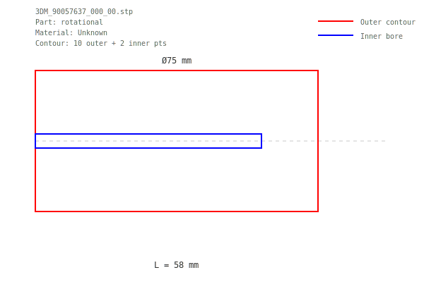

JR 810665.ipt.step

Dimensions: Ø9mm × 88mm
Contour: 10 outer + 9 inner points
JR 810671.ipt.step

Dimensions: Ø12mm × 49mm
Contour: 10 outer + 4 inner points
JR 810670.ipt.step

Dimensions: Ø36mm × 24mm
Contour: 10 outer + 12 inner points
3DM_90057637_000_00.stp
Dimensions: Ø75mm × 58mm
Contour: 10 outer + 2 inner points